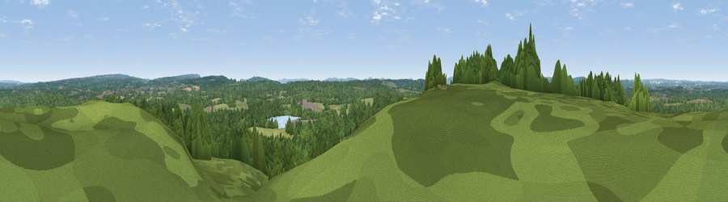

Viewpoint near Liphook
#40003 in England · top 60% of its area beats it · near Liphook · path 113 mWhere it is
The exact computed spot (SU 81375 30625). Click the marker for map links.
Public access: the nearest public right of way is about 113 m away — the final stretch may cross private land. Computed from Natural England's CRoW access layer and OpenStreetMap rights of way — not the legal definitive map. Always verify locally.
The view, rendered

A 360° render of this exact spot computed from the terrain model, tree cover and land cover — summer colours, afternoon light, calibrated against photographs of famous viewpoints. Real trees, hedges and buildings will differ in detail.
The panorama
Grey silhouette: terrain skyline in each direction (720 bearings, Earth curvature and refraction included). Dashed green: skyline with trees (+15 m) and buildings (+8 m) as obstacles. Blue strip: how far the ground is visible on each bearing.
Where the view opens
Wedge length = distance to the farthest visible ground on that bearing (vegetation-aware). Rings at 10, 25 and 50 km.
What fills the view
58% woodland · 35% grassland · 3% built-up · 3% cropland ·
Angular shares of the visible panorama (visual magnitude), not map area. Landscape diversity 0.40 (0–1 Shannon).
Key numbers
More beautiful places nearby
The staircase of upgrades: each row has a higher view potential than everything closer. Driving times are estimates from straight-line distance, calibrated against real road routing — check an actual route before setting out.
| Place | Direction | Drive | Score |
|---|---|---|---|
| Viewpoint near Liphook | NE · 1 km | ~2 min | 26.2 |
| Viewpoint near Milland | SE · 3 km | ~8 min | 48.2 |
| Viewpoint near Lynchmere | ESE · 5 km | ~11 min | 62.2 |
| Viewpoint near Steep | WSW · 8 km | ~16 min | 68.7 |
| Viewpoint near Fernhurst | E · 11 km | ~20 min | 75.1 |
| Beacon Hill | S · 12 km | ~23 min | 85.8 |
| Chanctonbury Ring | ESE · 37 km | ~56 min | 87.0 |
| Viewpoint near St. Lawrence | SSW · 60 km | ~82 min | 88.2 |
51.06920, -0.83998 · source: screening · position refined by local search. Computed location — check access rights before visiting.